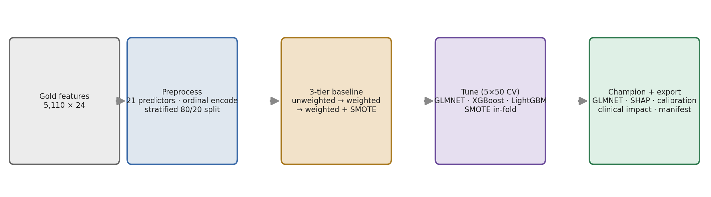
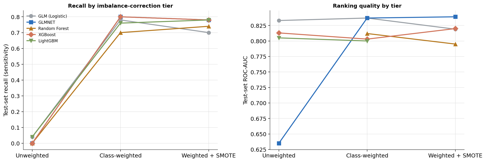
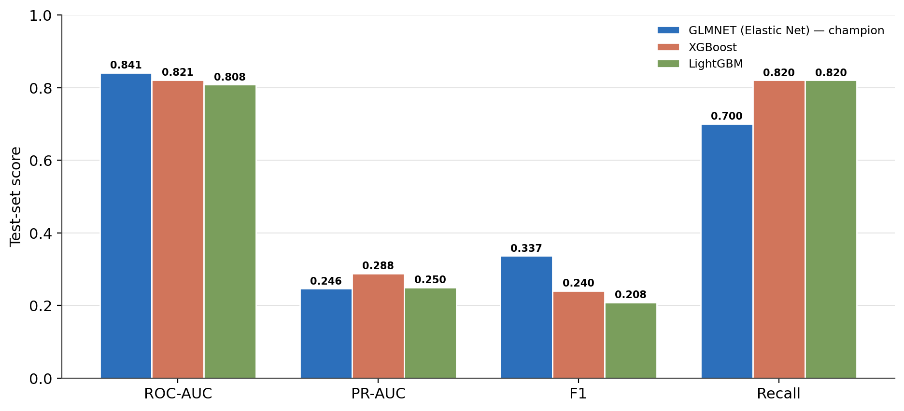
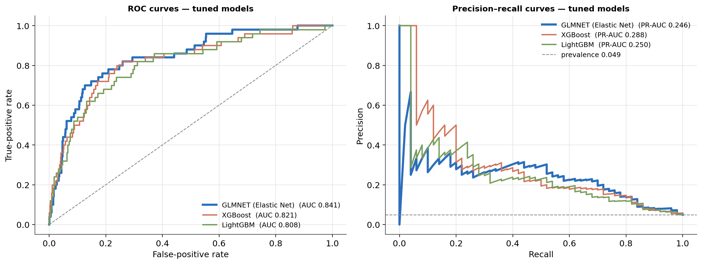
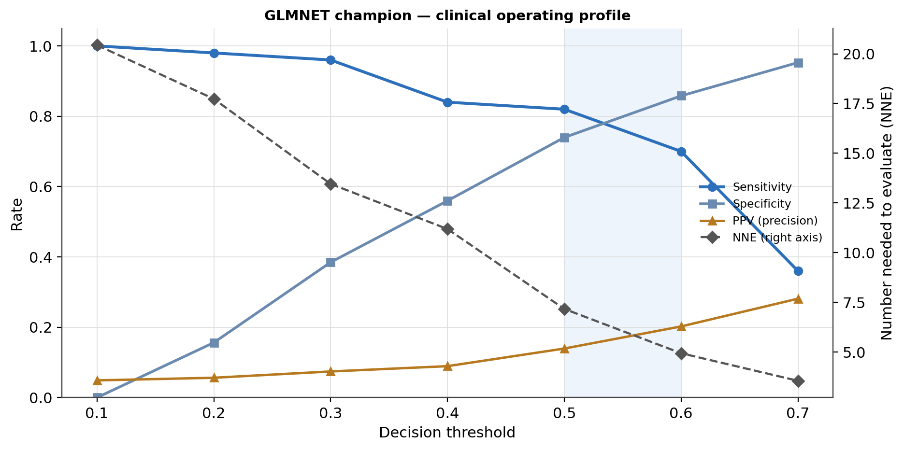
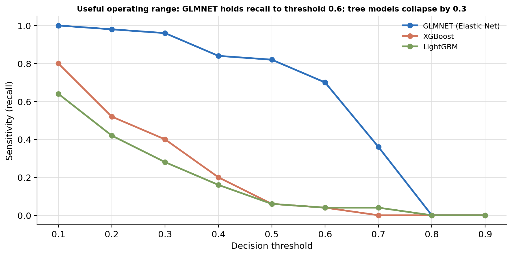
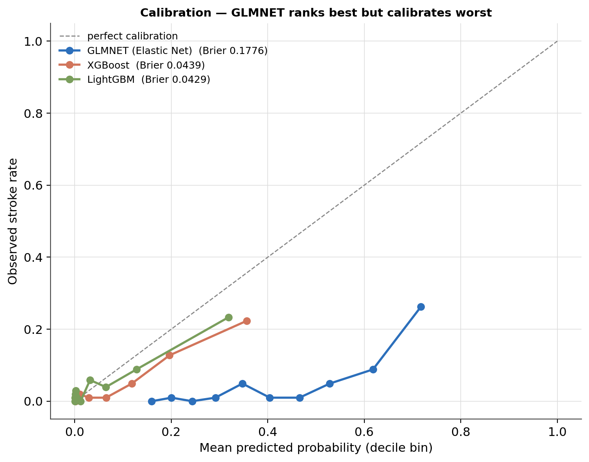
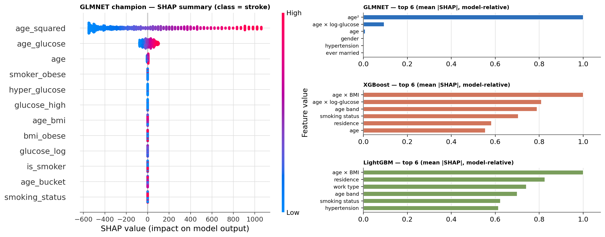

Clinical Stroke-Screening Model Benchmarking: Champion Selection, Threshold Profiling, and a Calibration Trade-off
Five architectures, three imbalance-correction tiers, a tuned three-model finalist round, and an evidence-based-medicine read on how the champion would behave as a screening tool — on 5,110 patients at 4.9% stroke prevalence.
A binary stroke-screening pipeline benchmarked end to end. Champion: a regularised linear model (GLMNET / Elastic Net) wins on ranking — test ROC-AUC 0.841 vs. XGBoost 0.821 and LightGBM 0.808 — despite being the simplest architecture. Class weighting is the load-bearing fix: recall jumps from ~0.04 to ~0.80 from tier 1 to tier 2; SMOTE adds only an increment. Named trade-off: GLMNET ranks best but calibrates worst (Brier 0.178 vs. ~0.043) — acceptable for a binary flag, not for risk communication. Widest operating range: GLMNET holds recall to a 0.6 threshold; the tree models collapse by 0.3.
stroke screening, binary classification, class imbalance, SMOTE, class weighting, hyperparameter tuning, ROC-AUC, precision-recall, Youden’s J, clinical impact analysis, number needed to screen, calibration, Brier score, SHAP, elastic net, XGBoost, LightGBM, Python, scikit-learn
Abstract
This study benchmarks a binary stroke-screening pipeline from a 21-predictor feature matrix through champion selection and a clinical-workflow assessment, on a held-out test set of 1,022 patients (50 stroke-positive; 4.9% prevalence, a 19.5:1 imbalance). Five architectures — logistic regression, Elastic Net (GLMNET), random forest, XGBoost, LightGBM — were evaluated across three imbalance-correction tiers: unweighted, cost-sensitive class weighting, and class weighting with in-fold SMOTE. Three finalists (GLMNET, XGBoost, LightGBM) then underwent a 5-fold, 50-iteration randomised hyperparameter search inside a SMOTE pipeline, scored on ROC-AUC. GLMNET emerged as the champion with a test ROC-AUC of 0.841, ahead of XGBoost (0.821) and LightGBM (0.808) — the simplest architecture winning on ranking quality, consistent with an additive, age-driven risk structure that a regularised linear boundary captures without overfitting the majority-class manifold. Class weighting is the load-bearing intervention: recall rose from roughly 0.04 (unweighted) to roughly 0.80 (weighted); SMOTE added only an increment. A nine-threshold clinical-impact sweep showed GLMNET holding useful sensitivity across a 0.10–0.70 threshold span while the tree models compress into a narrow low-probability band. A calibration analysis names an explicit trade-off: GLMNET ranks patients best but calibrates worst (Brier 0.178 vs. ~0.043 for the tree models) — acceptable for a binary flag, not for absolute risk communication. SHAP attributions reveal divergent importance hierarchies — age_squared dominates GLMNET, age_bmi dominates both tree models — with cross-architecture agreement only at the low-signal tail.
Keywords: stroke screening, class imbalance, SMOTE, hyperparameter tuning, clinical impact analysis, calibration, SHAP
Introduction
Notebook four of a six-part stroke-risk series turns the preceding analyses into a working classifier. The exploratory and inferential stages established that stroke risk in this cohort is overwhelmingly age-driven and largely additive; this study tests whether that structure is better captured by a regularised linear model or by tree ensembles, and profiles the winner as a screening tool.
Three questions organise the work. Which imbalance correction matters? — evaluated across three tiers so the marginal value of each intervention is visible. Which architecture ranks patients best? — a tuned finalist round scored on ROC-AUC, the metric that stays interpretable under a 19.5:1 imbalance. How would the champion behave in a clinic? — a threshold sweep in evidence-based-medicine terms (sensitivity, specificity, likelihood ratios, number needed to evaluate), plus a calibration check, because a model that ranks well can still produce probabilities that do not correspond to observed event rates.
Method
Data and feature set
The input is the project’s Gold analytical table (5,110 patients, 4.9% stroke prevalence), produced by an upstream medallion ETL pipeline with zero missingness. Feature engineering expanded the base columns to 21 predictors across four families (Table 1): base demographics and clinical indicators, age transformations (age_squared, a four-level age_bucket), metabolic and lifestyle flags (log-glucose, a > 140 mg/dL flag, obesity and underweight flags, a combined-smoker flag), and four interaction terms (age_glucose, age_bmi, hypertension × high-glucose, smoker × obese). The identifier and a redundant composite column were dropped.
Table 1
The 21-Predictor Modelling Matrix
| Family | Features |
|---|---|
| Base demographics & clinical | gender, age, hypertension, heart disease, ever married, work type, residence type, average glucose, BMI, smoking status |
| Age transformations | age², age band (young / mid / mature / senior) |
| Metabolic & lifestyle flags | log-glucose, high glucose (> 140 mg/dL), obese (BMI ≥ 30), underweight (BMI < 18.5), current-or-former smoker |
| Interaction terms | age × log-glucose, age × BMI, hypertension × high-glucose, smoker × obese |
Note. Eight low-cardinality categoricals were ordinal-encoded (unknown → −1); no high-cardinality categoricals remained after identifier removal, so target encoding was not exercised.
Preprocessing and split
A stratified 80/20 split allocated 4,088 patients to training and 1,022 to a held-out test set (50 stroke-positive), preserving the population positive rate in both partitions — non-negotiable at 4.9% prevalence, where a random split risks an unrepresentative test set. All 21 predictors passed through as a fully numeric, zero-missing matrix.
Baseline evaluation — three tiers
Five architectures were trained under three successive imbalance corrections: (1) unweighted — raw class distribution, the performance floor; (2) class-weighted — class_weight="balanced" for the models that support it, scale_pos_weight ≈ 19.5 for XGBoost, with each model’s decision threshold moved to its Youden’s J optimum (the ROC point maximising sensitivity + specificity − 1); (3) class-weighted + SMOTE — synthetic minority oversampling applied inside each cross-validation fold via an imbalanced-learn pipeline, so synthetic samples never leak into validation or test data.
Hyperparameter tuning and champion selection
The three finalists — GLMNET, XGBoost, LightGBM — each ran RandomizedSearchCV with 5-fold stratified cross-validation and 50 iterations inside a SMOTE pipeline (750 fits total), scored on ROC-AUC. GLMNET’s pipeline included a StandardScaler so the elastic-net penalty operates evenly across feature scales. Each tuned model was then evaluated on the test set at its Youden threshold. Random forest was excluded after consistent bottom-tier baseline performance; unregularised logistic regression was excluded as a special case of GLMNET with no tuning surface.
Clinical-impact metrics
Each tuned model was swept across nine decision thresholds (0.10–0.90), reporting sensitivity, specificity, positive and negative predictive value, positive and negative likelihood ratios (LR+, LR−), miss rate, and the number needed to evaluate (NNE — high-risk patients a clinician must investigate to find one true stroke).
Calibration and explainability
Calibration was assessed with decile-binned reliability curves and the Brier score (mean squared error between predicted probability and outcome; lower is better). SHAP values were computed with a LinearExplainer for GLMNET and TreeExplainer for the tree models, and summarised as per-patient attributions and mean absolute importance.
Software and reproducibility
Python with scikit-learn 1.2.2, imbalanced-learn 0.10.1, xgboost 1.7.6, lightgbm 4.3.0, shap 0.44.1. The tuned pipelines, the exact held-out test set, and the clinical-impact and calibration tables are persisted as artefacts; every figure and table in this article was recomputed from those artefacts, and all recomputed values matched the original run. The end-to-end pipeline is shown in Figure 8.
Figure 8
The Benchmarking Pipeline, End to End

Note. Shown after the Method sections it summarises; the three-tier baseline and the tuning round are described above.
Results
Class weighting is the load-bearing intervention
The three-tier baseline (Figure 1, Table 2) makes the intervention hierarchy unambiguous. Unweighted, three of five models — GLMNET, random forest, XGBoost — detected zero stroke cases in the test set, scoring ~95% accuracy by predicting the majority class for every patient; logistic regression and LightGBM each detected 2 of 50 (recall 0.04). Class-weighted, every model jumped to recall 0.70–0.80 — from 2 detections to 35–40 — at the cost of accuracy falling to 72–84% as false positives surged (logistic regression: 155 false positives against 39 true positives, precision 0.20). ROC-AUC converged into a narrow 0.800–0.837 band, confirming the discriminative signal is accessible to every architecture once the imbalance is corrected. Adding SMOTE produced only an increment: GLMNET’s ROC-AUC rose to 0.839 (the best baseline value), XGBoost to 0.820, while recall stayed in the 0.70–0.78 range.
Table 2
Three-Tier Baseline Results (Held-Out Test Set, 50 Stroke-Positive of 1,022)
| Model | Unweighted recall / ROC-AUC | Class-weighted recall / ROC-AUC | + SMOTE recall / ROC-AUC |
|---|---|---|---|
| Logistic regression | 0.04 / 0.833 | 0.78 / 0.837 | 0.70 / 0.819 |
| GLMNET (Elastic Net) | 0.00 / 0.635 | 0.80 / 0.837 | 0.78 / 0.839 |
| Random forest | 0.00 / — | 0.70 / 0.812 | 0.74 / 0.795 |
| XGBoost | 0.00 / 0.813 | 0.80 / 0.803 | 0.78 / 0.820 |
| LightGBM | 0.04 / 0.805 | 0.76 / 0.800 | 0.78 / — |
Note. Class-weighted and SMOTE tiers evaluate at each model’s Youden’s J threshold. Unweighted GLMNET’s ROC-AUC of 0.635 reflects near-degenerate predictions from an unscaled elastic net under the imbalance. Random forest and logistic regression were not advanced to tuning.
Figure 1
Baseline Progression Across the Three Imbalance-Correction Tiers

Note. The step from tier 1 to tier 2 is transformative; the step from tier 2 to tier 3 is marginal. Class weighting, not SMOTE, is the intervention that makes these models clinically usable.
The tuned champion: GLMNET on ranking
The randomised search (Table 3) produced three tuned models whose test-set behaviour separates cleanly (Table 4, Figures 2 and 3). GLMNET is the champion on ranking: test ROC-AUC 0.841 vs. XGBoost 0.821 vs. LightGBM 0.808, and the best F1 (0.337). It reached this with heavy regularisation (C = 0.001, near-Lasso l1_ratio = 0.9) — the elastic net, with scaled features, performing genuine feature selection rather than overfitting minority-class noise. XGBoost leads on precision–recall (PR-AUC 0.288 vs. GLMNET’s 0.246) and, with LightGBM, on raw recall — both detect 41 of 50 cases at their aggressive Youden thresholds (~0.04–0.09) versus GLMNET’s 35 of 50 at a 0.61 threshold — but at markedly lower precision (0.12–0.14 vs. 0.22). The ROC curves (Figure 3) show GLMNET’s curve lying above the tree models at nearly every false-positive rate: the linear model spreads its discrimination across a wider probability range.
Table 3
Hyperparameter Search: Best Configuration per Finalist (5-Fold CV, 50 Iterations, SMOTE Pipeline)
| Model | Best CV ROC-AUC | Tuning time | Key hyperparameters |
|---|---|---|---|
| GLMNET (Elastic Net) | 0.838 | 0.6 min | C = 0.001, l1_ratio = 0.9 (+ StandardScaler) |
| XGBoost | 0.825 | 2.7 min | 300 trees, lr 0.03, depth 4, subsample 0.9, colsample 0.8, γ 0.1 |
| LightGBM | 0.821 | 2.0 min | 500 trees, lr 0.03, depth 6, 15 leaves, subsample 0.7, colsample 0.9 |
Note. Micro-timing beforehand projected the full 750-fit suite at ~15 min; memory was flat at ~621 MB. Shallow tree depths (4, 6) confirm the ensembles also need regularisation to avoid the majority-class manifold.
Table 4
Tuned Model Performance on the Held-Out Test Set (at Youden Threshold)
| Model | ROC-AUC | PR-AUC | Youden threshold | Sensitivity | Precision | F1 | TP / FP / FN |
|---|---|---|---|---|---|---|---|
| GLMNET (Elastic Net) — champion | 0.841 | 0.246 | 0.615 | 0.70 | 0.222 | 0.337 | 35 / 123 / 15 |
| XGBoost | 0.821 | 0.288 | 0.094 | 0.82 | 0.141 | 0.240 | 41 / 250 / 9 |
| LightGBM | 0.808 | 0.250 | 0.036 | 0.82 | 0.119 | 0.208 | 41 / 303 / 9 |
Note. TP/FP/FN counted at each model’s Youden threshold on the 1,022-patient test set (50 positives). The tree models’ recall edge (41 vs. 35 detections) costs roughly twice the false positives.
Figure 2
Tuned Model Comparison Across Four Test-Set Metrics

Note. GLMNET wins ranking (ROC-AUC) and balance (F1); the tree models win raw recall and precision–recall area.
Figure 3
ROC and Precision–Recall Curves for the Three Tuned Models

Note. GLMNET (bold) dominates the ROC space; XGBoost holds a slight precision–recall edge at moderate recall.
Clinical operating profile
The nine-threshold sweep (Figure 4, Table 5, Figure 5) is where the champion choice is decided. GLMNET keeps a usable profile across a wide threshold span. At 0.10 it reaches sensitivity 1.00 (every case caught) at zero specificity and NNE 20.4; at 0.50, sensitivity 0.82 / specificity 0.74 / LR+ 3.15 / NNE 7.2; at 0.60 — near its Youden optimum — sensitivity 0.70 / specificity 0.86 / LR+ 4.93 / NNE 4.9. An LR+ near 5 raises post-test probability by a clinically useful margin. The tree models compress: LightGBM manages only sensitivity 0.64 at threshold 0.10 and detects 3 of 50 cases by 0.50; XGBoost falls to sensitivity 0.40 by threshold 0.30 and to a mathematically-precise-but-useless sensitivity 0.04 (LR+ ∞, 2 cases) at 0.60. The mechanism is probability spread: GLMNET’s outputs occupy the full [0, 1] interval, so moving the threshold trades sensitivity for specificity smoothly; the tree models concentrate their positive mass below 0.10, leaving no useful operating range above it (Figure 5).
Table 5
Clinical-Impact Metrics at Representative Thresholds
| Model @ threshold | Sensitivity | Specificity | PPV | LR+ | NNE | Cases detected (of 50) |
|---|---|---|---|---|---|---|
| GLMNET @ 0.10 | 1.00 | 0.00 | 0.049 | 1.00 | 20.4 | 50 |
| GLMNET @ 0.50 | 0.82 | 0.74 | 0.139 | 3.15 | 7.2 | 41 |
| GLMNET @ 0.60 | 0.70 | 0.86 | 0.202 | 4.93 | 4.9 | 35 |
| XGBoost @ 0.10 | 0.80 | 0.75 | 0.142 | 3.21 | 7.1 | 40 |
| XGBoost @ 0.30 | 0.40 | — | — | — | — | 20 |
| LightGBM @ 0.10 | 0.64 | 0.84 | 0.168 | 3.91 | 6.0 | 32 |
| LightGBM @ 0.50 | — | — | — | — | — | 3 |
Note. NNE = number needed to evaluate to find one true stroke. GLMNET is the only model with a non-trivial profile above threshold 0.10.
Figure 4
GLMNET Champion — Clinical Operating Profile Across the Threshold Sweep

Note. Left axis: sensitivity, specificity, PPV. Right axis: NNE. Shaded band = the 0.5–0.6 region around the Youden optimum, where LR+ ≈ 3–5 and NNE ≈ 5–7.
Figure 5
Useful Operating Range: Sensitivity vs. Threshold for All Three Tuned Models

Note. The width of a model’s usable band, not its peak recall, is what makes it deployable as an adjustable screening tool.
The calibration trade-off, named
Ranking quality and calibration are separate properties, and the tuned models split on the second one sharply (Figure 6, Table 6). LightGBM (Brier 0.043) and XGBoost (0.044) are well calibrated — their reliability curves track the diagonal. GLMNET (Brier 0.178) is not — it overestimates risk across the mid-probability range, a direct consequence of spreading probability mass to widen the operating range. The trade-off is explicit: GLMNET is the better screener (best ranking, widest usable range, interpretable relative to its threshold); the tree models are the better probability estimators (their predicted probabilities correspond to observed event rates). For a binary high-risk flag — this pipeline’s deployment target — GLMNET’s calibration gap is acceptable. For risk communication or shared decision-making, the tree models would be the stronger choice.
Table 6
Calibration: Brier Scores (Lower Is Better)
| Model | Brier score | Reading |
|---|---|---|
| LightGBM | 0.043 | well calibrated — tracks the diagonal |
| XGBoost | 0.044 | well calibrated |
| GLMNET (Elastic Net) | 0.178 | mis-calibrated — overestimates mid-range risk |
Note. GLMNET’s high Brier score coexists with its best ROC-AUC — ranking and calibration are independent, and this pipeline optimised for ranking.
Figure 6
Reliability Curves and Brier Scores for the Three Tuned Models

Note. Decile-binned. The dashed diagonal is perfect calibration.
Feature attributions diverge by architecture
SHAP summaries (Figure 7, Table 7) show the linear champion and the tree models learned different representations of the same signal. GLMNET is dominated by age_squared — its SHAP spread is an order of magnitude wider than any other feature — followed by age_glucose and raw age; age_bmi was effectively zeroed out by the near-Lasso penalty. Both tree models are dominated by age_bmi, with age_glucose and the discretised age_bucket next for XGBoost, while LightGBM elevates residence_type and work_type (socioeconomic proxies) — a divergence between the two ensembles that marks that signal as real but fragile. All three models agree that smoker_obese, hyper_glucose, bmi_obese, and glucose_high carry little independent signal — agreement at the tail, across different inductive biases, is the strongest evidence those interaction/threshold features are genuinely weak.
Table 7
Top SHAP Features per Tuned Model (by Mean Absolute Attribution)
| Rank | GLMNET (linear) | XGBoost | LightGBM |
|---|---|---|---|
| 1 | age² | age × BMI | age × BMI |
| 2 | age × log-glucose | age × log-glucose | residence type |
| 3 | age | age band | work type |
| 4 | smoking status | smoking status | age band |
| Shared tail (all weak) | smoker × obese, hypertension × high-glucose, obese flag, high-glucose flag |
Note. GLMNET routes the age signal through age²; the tree models route it through age × BMI. Both are valid encodings of the same underlying age-driven risk.
Figure 7
SHAP Attributions: GLMNET Champion Summary and Cross-Model Importance

Note. Left — per-patient SHAP values for GLMNET (colour = feature value). Right — mean |SHAP| per feature, normalised within each model for a shared scale.
Discussion
Why the simplest model won
GLMNET’s win on ranking is not an accident of tuning — it follows from the risk structure the earlier notebooks established. Stroke risk in this cohort is dominated by age and is close to additive; feature engineering handed the linear model direct terms for the non-linear (age_squared) and interaction (age_glucose) components of that relationship. Under heavy regularisation on scaled features, the elastic net selected those terms and discarded the rest. The tree ensembles spent their splitting budget rediscovering the same age structure and, lacking the linear model’s smooth extrapolation, spread their predictions less evenly — which is exactly why their operating range collapsed. This is a case where matching model complexity to signal complexity beats raw capacity.
The trade-off is a deployment decision, not a defect
GLMNET ranks best and calibrates worst; the tree models do the reverse. Neither is globally superior — the right choice depends on what the output feeds. A screening pipeline that flags patients for follow-up needs good ordering and a usable threshold, which GLMNET provides. A tool that shows a patient “your stroke risk is 12%” needs calibrated probabilities, which the tree models provide. Naming this explicitly, rather than reporting a single leaderboard number, is what lets a downstream team pick correctly.
Screening implications
At its 0.60 operating point, the champion catches 70% of stroke cases with an NNE near 5 and an LR+ near 5 — an efficient profile for a high-volume primary-care screen. Pushed to threshold 0.10 it catches everything at the cost of flagging every patient; the adjustable range between those points is the practical value of the model. The tree models offer no such dial.
Limitations
The test set holds only 50 stroke-positive patients, so all minority-class metrics carry wide sampling uncertainty (a single misclassification moves recall by 0.02). Evaluation is single-split, not repeated cross-validation, and on one cohort — external validation is required before any clinical use. The Youden threshold optimises a statistical criterion, not a cost-weighted clinical objective; a real deployment would set the threshold from the local cost of a missed stroke versus an unnecessary follow-up. SHAP importance is model-internal and does not establish causal effect. GLMNET’s calibration gap means its raw probabilities must not be reported as risk percentages without recalibration (e.g. Platt scaling or isotonic regression on a held-out set).
Conclusion
A regularised linear model is the champion stroke screener for this cohort — best ranking (ROC-AUC 0.841), widest usable operating range, and interpretable — while the gradient-boosted ensembles are the better-calibrated probability estimators. Class weighting, not synthetic oversampling, is the intervention that converts any of these architectures from a 95%-accurate-and-useless classifier into a working screening tool. The tuned pipelines, preprocessing infrastructure, SHAP values, and clinical-impact tables are persisted for the downstream fairness audit and deployment.
References
Caruana, R., & Niculescu-Mizil, A. (2006). An empirical comparison of supervised learning algorithms. Proceedings of the 23rd International Conference on Machine Learning, 161–168. https://doi.org/10.1145/1143844.1143865
Chawla, N. V., Bowyer, K. W., Hall, L. O., & Kegelmeyer, W. P. (2002). SMOTE: Synthetic minority over-sampling technique. Journal of Artificial Intelligence Research, 16, 321–357. https://doi.org/10.1613/jair.953
Chen, T., & Guestrin, C. (2016). XGBoost: A scalable tree boosting system. Proceedings of the 22nd ACM SIGKDD International Conference on Knowledge Discovery and Data Mining, 785–794. https://doi.org/10.1145/2939672.2939785
Ke, G., Meng, Q., Finley, T., Wang, T., Chen, W., Ma, W., Ye, Q., & Liu, T.-Y. (2017). LightGBM: A highly efficient gradient boosting decision tree. Advances in Neural Information Processing Systems, 30, 3146–3154.
Lemaître, G., Nogueira, F., & Aridas, C. K. (2017). Imbalanced-learn: A Python toolbox to tackle the curse of imbalanced datasets in machine learning. Journal of Machine Learning Research, 18(17), 1–5.
Lundberg, S. M., & Lee, S.-I. (2017). A unified approach to interpreting model predictions. Advances in Neural Information Processing Systems, 30, 4765–4774.
Pedregosa, F., Varoquaux, G., Gramfort, A., Michel, V., Thirion, B., Grisel, O., Blondel, M., Prettenhofer, P., Weiss, R., Dubourg, V., Vanderplas, J., Passos, A., Cournapeau, D., Brucher, M., Perrot, M., & Duchesnay, É. (2011). Scikit-learn: Machine learning in Python. Journal of Machine Learning Research, 12, 2825–2830.
Youden, W. J. (1950). Index for rating diagnostic tests. Cancer, 3(1), 32–35. https://doi.org/10.1002/1097-0142(1950)3:1<32::AID-CNCR2820030106>3.0.CO;2-3
Zou, H., & Hastie, T. (2005). Regularization and variable selection via the elastic net. Journal of the Royal Statistical Society: Series B, 67(2), 301–320. https://doi.org/10.1111/j.1467-9868.2005.00503.x
fedesoriano. (2021). Stroke prediction dataset [Data set]. Kaggle. https://www.kaggle.com/datasets/fedesoriano/stroke-prediction-dataset
Model pipeline and figures by the author. All test-set metrics are single-split and single-cohort; external validation is required before any clinical use.